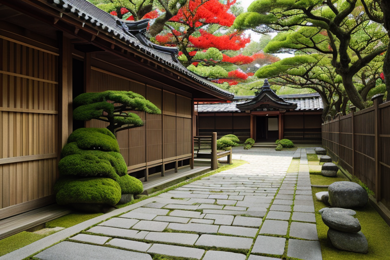
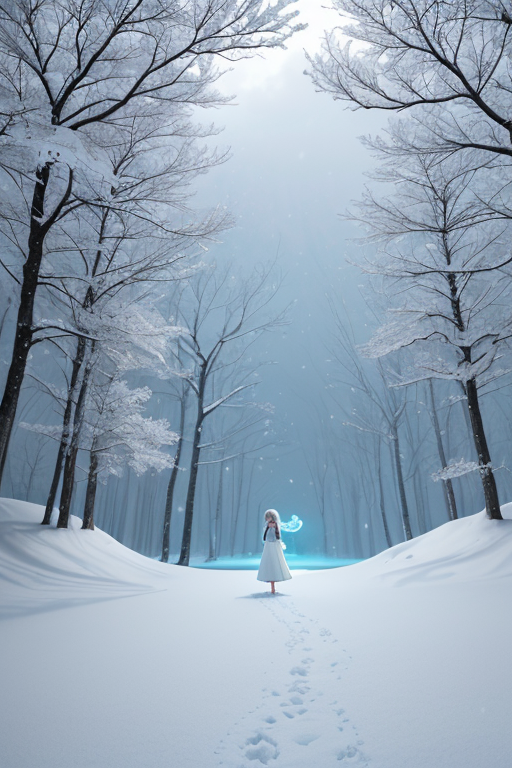
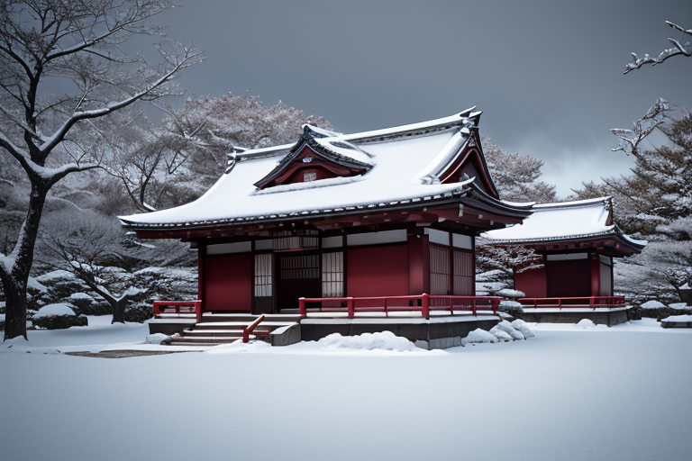
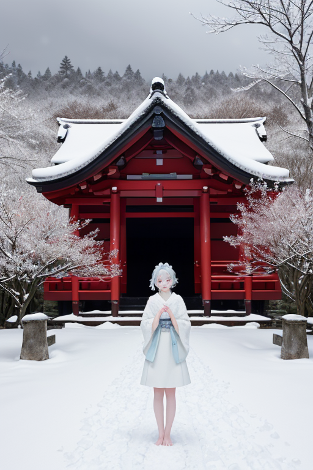
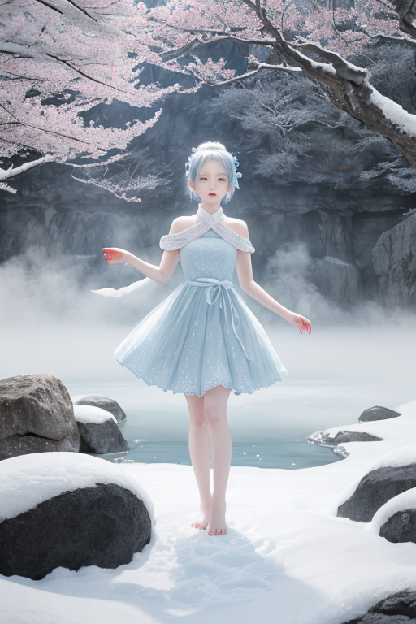

第一章 現実の秋田
あなたはまだ気づいていない。この土地にも、王がいることを。
角館武家屋敷通り。枝垂れ桜の季節は過ぎ、深い緑の静寂が通りを覆う。黒板塀が続くその道は、かつて佐竹藩の武士たちが歩いた。歴史は、時に流血と裏切り、そして沈黙の選択によって紡がれてきた。今、観光客のざわめきが去った後、残るのは石畳に吸い込まれるような静けさだけだ。
その静けさの中心に、一人の青年が立っていた。純白のコートを纏い、淡い青の瞳は遠くを見据える。秋田の王、アキタリア・ネージュ。彼の前には、見えない歪みが広がっている。日本列島を縦断する巨大な歪みの帯。その一部が、この東北の地盤に、目には見えない重圧としてかかっている。
彼は何も語らない。沈黙こそが、この土地の、そして彼自身の本質だった。しかしその沈黙は、無為ではない。耳を澄ませば、地中を伝わる岩盤の軋みが聞こえる。来るべき「現実」の予兆。王は目を閉じ、掌をかざした。雪結晶を思わせる微光が、彼の周囲にちらつく。歪みを消すことはできない。ただ、ほんの少し、その衝撃を分散させ、時間をずらすことだけが許されている。
逃避か、力か。彼の沈黙は、その問いそのもののように、この土地に深く根を下ろしていた。

第二章「歪みの兆候」
角館武家屋敷の枝垂れ桜は、静かに雪を纏っていた。その根元で、アキタリア・ネージュは微かに眉をひそめた。地中深く、かつての佐竹藩の時代から続く土地の「軋み」が、現代のプレートの歪みと共鳴し始めている。それは物理的な断層だけでなく、歴史の重みが生む、目に見えない亀裂だった。
「王様」
ネージュリィがそっと近づき、淡い雪の結晶を掌に浮かべた。結晶の輝きに、地脈の乱れが映し出される。田沢湖の深い青は、かつてないほどの静けさをたたえ、それは逆に不気味な予感を漂わせた。湖底に沈むと伝えられる辰子姫の伝説のように、この土地は深い感情を静かに抱え込み、時にそれが巨大な「歪み」として現れる。
男鹿半島では、ナマハルが仮面の下で険しい表情を浮かべていた。なまはげの行事は、人々の恐れを形にし、浄化するための装置だ。しかし今、地殻の不安定さが、人々の無意識の「恐れ」を増幅させ始めている。それは災害への怯えというより、この厳しくも美しい風土そのものへの、複雑な畏敬と不安が混ざり合った感情だった。
王は沈黙したまま、掌を地面にかざした。雪結晶の紋章が微かに光る。消せない。歴史の歪みも、地殻の歪みも、決して消し去ることはできない。彼にできるのは、その衝撃が一気に解放されるのを防ぎ、ほんの少し、時間をずらすことだけだ。雪のように静かに、しかし確かに、力を地中に浸透させていく。その沈黙は、決して無力ではなかった。

第三章 王の葛藤
角館武家屋敷の枝垂れ桜は、静かに雪を纏っていた。その下で、アキタリア・ネージュは決断を迫られていた。地中を流れる「歪み」の奔流は、佐竹藩の歴史が刻んだ軋みと重なり、近い将来、この地を大きく揺るがそうとしていた。彼の沈黙は、この軋みをそのまま受け入れ、衝撃を最小限に「調整」するためのものだった。
しかし、妖精ナマハルがもたらしたのは、別の選択肢だった。歪みの解放点を意図的にずらし、揺れそのものは大きくするが、そのエネルギーを、長年続く地域の古い構造――閉塞感や停滞――を破壊する方向へ向けさせるという、危険な提案。それは「調整」を超えた「変革」への介入だった。
雪王は目を閉じた。なまはげの仮面が人々に与える「畏れ」は、単なる脅しではない。刷新と浄化の祈り。彼の沈黙は、これまで常に、物事を静かに受け流す「力」であった。だが今、この沈黙を破り、能動的に歴史の流れに手を加えるべきなのか。雪のように降り積もり、全てを覆い静めるのか。それとも、雪崩のように、古きものを一掃する起点となるのか。純白の紋章が、淡い青い光を不安定に脈動させた。

第四章 妖精との対話
角館武家屋敷の枝垂れ桜は、静かに雪を纏っていた。主君の沈黙が、これまでにない重さで庭園を満たす。
「主君よ」
ネージュリィが微かな雪の結晶となって現れた。その声は、降り積もる雪の音よりも静かだった。
「あなたの沈黙は、これまで歪みを吸収し、緩和する『力』でした。佐竹藩の苛烈な歴史も、なまはげの厳しい戒めも、あなたの静寂がその刃を鈍らせ、人々が受け止められる形へと調整してきた」
雪王は目を開けず、ただ聴く。
「しかし今、農民たちの声は『変革』を求めています。これは、歪みの調整では収まりません。地殻そのものの動きです」
ナマハルが仮面の影から言葉を継ぐ。
「なまはげの仮面は、畏れによって現状維持を促すもの。ですが、時には畏れこそが、現状を打ち破る勇気の源となる。主君の沈黙が、ただの『逃避』になるか、新たな秩序を生む『力』になるか。それは、今この瞬間にかかっています」
雪王の紋章が、淡青の光を強く放った。沈黙そのものが、答えを求めていた。

第五章「微調整と余韻」
角館武家屋敷の枝垂れ桜が、静かに震えた。地の底から来る、巨大な軋み。雪王アキタリア・ネージュは、その全てを掌に受け止めた。歪みの調整では収まらない。地殻そのものの動き。彼は、沈黙の中で決断した。王の星との契約に背き、自らの存在を「微調整」の枠に留めないことを。
彼は、佐竹藩がこの地に築いた秩序の記憶を呼び起こし、なまはげが人々に植え付けた畏れのエネルギーを変換した。全てを、田沢湖の深淵へと集約させる。湖面に巨大な渦が現れ、地殻の圧力を一点へと吸い込む。代償は、彼自身の「静寂」。彼を構成する雪と沈黙の粒子が、緩やかに散逸し始める。
地震は起きた。しかし、その規模は、予測より一段階小さかった。男鹿半島を襲うはずだった津波は、数分の遅れによって、人々に逃げる余韻を与えた。
乳頭温泉の湯煙の傍らで、雪王の姿は薄れていた。ネージュリィが、消えゆく主君の手を握る。そこには、感情の名残りである、かすかな温もりがあった。
沈黙は、逃避ではなかった。それは、秩序を破り、新たな命の時間を紡ぐ、静かなる力だった。
あなたの町にも、王がいる。